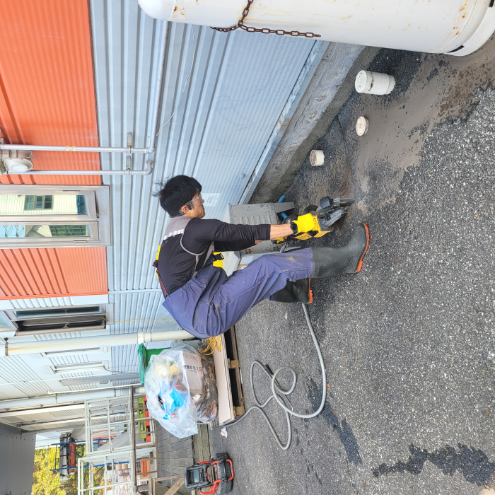
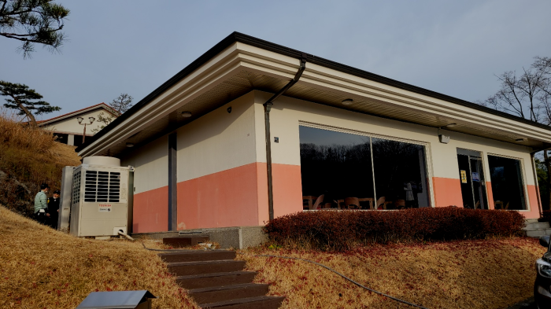
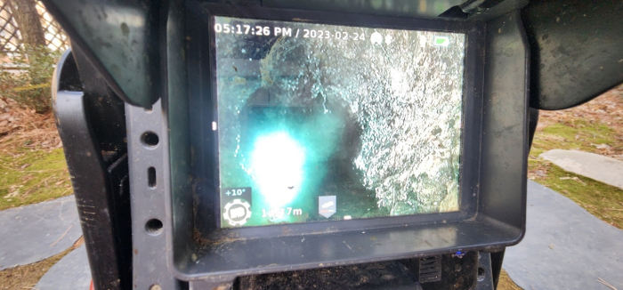
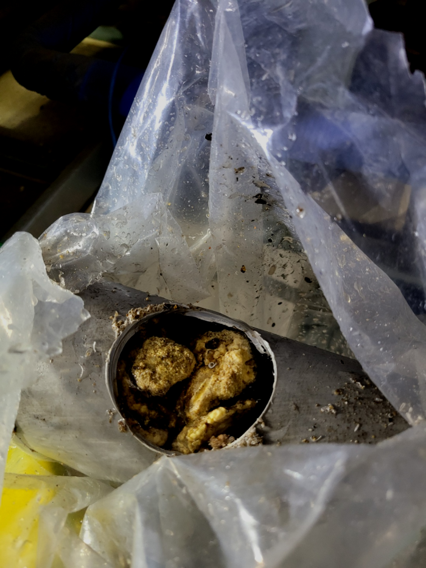
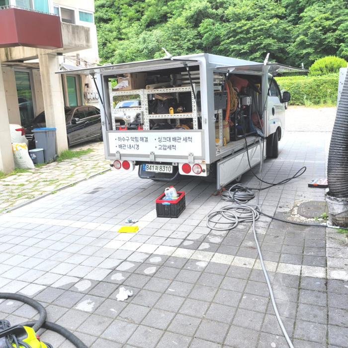
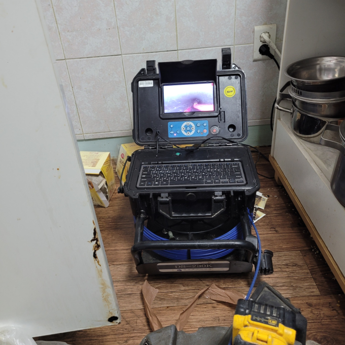

🏠 동작구 흑석동 배수구막힘 사당동 하수도역류 배관청소 설비
수원 싱크대막힘 전문 시공 후기

📋 작업 개요
- 위치: 수원
- 서비스 유형: 싱크대막힘, 변기막힘, 하수구막힘, 배관막힘, 역류해결, 뚫는업체, 배관청소, 설비공사
- 작업 일시: 2024. 2. 3. 22:06
- 업체명: 하수구수사대 (010-5615-2118)
🔍 문제 상황
안녕하세요^^
설비전문업체 "하수구수사대"를 찾아주셔서 감사합니다^^
배수구는 워낙 당연하게 이용하는 시설이기 때문에 인지하지 않고 모르고 살아가지만 우리에게는 없어서는 안될 설비중에 하나입니다.
우선 이미 하수관에 악취가 올라오고 있었고 이걸 해결하기 위해서 다시 석션기를 넣어서 끌어올려서 이물질부터 제거했습니다. 우리가 늘 몸을 샤워하면서 청결하게 하듯이 이곳도 마찬가지입니다. 자주 하수관를 주기적으로 관리를 하면서 진행하고 있기에 그만큼 잘 알아보고 하셔야 합니다.
동작구 흑석동 배수구막힘 사당동 하수도역류 배관청소 설비

🔎 원인 분석
💡 전문가 진단: 동작구 흑석동 배수구막힘 사당동 하수도역류 배관청소 설비
강조하고 싶은 게 또 있다면 수많은 기계들을 적절하게 준비해 놓았는가 입니다. 배수실내든 실외든 구조도 그렇고 이물질 형태는 현장들마다 다릅니다. 그럼에도 장비를 부족하게 준비되어 있는 곳이라면 변수가 된느 상황에는 해결이 불가능해질 확률이 높아집니다.
흔히 구조가 다르기도 하고 꺼내야 하는 이물질들의 양이 일반적으로 많기 때문이라고 할 수 있습니다. 이렇게 평균 비용보다 훨씬 더 합리적인 비용을 제시하는 업체의 경우에는 정확하게 시공을 해주었는지 그리고 퇴수막힘 재발의 확률은 없는지를 다시 한번 생각해 보고 결정을 하셔야 합니다.
음식을 많이 하는 일반 식당뿐만 아니라 가정에서도 우리가 매일 무심코 흘려보내는 국물에도 기름성분이 많이 포함이 되어있습니다. 배수관막힘은 이러한 기름성분들이 배관에 머물러있는 시간이 길어지게 되면서 점점 차갑게 굳어지면 액체에서 고체로 변하게 됩니다.
샤프트장비는 배수관내부 배관 오염 원인인 기름 슬러지를 효과적으로 제거 하는데 도움이 돼서 자주 쓰이게 되요. 노즐의 회전력을 이용하여 스케일링 작업을 진행하는만큼 찌꺼기가 하나로 뭉쳐진 부근 위주로 청소를 하게돼요.
저렴하기만 한 비용으로 작업해 주는 곳을 알아보셨다가 손실을 입는 배수원인이 있다면 성의가 없었기 때문이에요. 분쇄 작업에는 상황들에 따른 기계 준비가 안 되어 있으면 시공이 어려워져요.

🔧 작업 과정
고체 물질은 오히려 보이지 않는 배관 안으로 들어가면서 심하게 막히게 되는 경우가 있습니다. 이때는 배관 배관을 들어내는 큰 공사까지 해야 할 수도 있기 때문에 혼자서 해결을 하지 마시고 전문 업체를 통해서 진행을 하시는 것이 더욱 시간이나 비용적으로도 합리적으로 처리할 수 있습니다.
사진으로 보시는 것처럼 배관으로 내시경을 넣어 확인해 보았더니 싱크대볼이 문제가 아니라 하수도에 기름 스케일이 쌓여서 슬러지가 생기는 바람에 물흐름을 방해하고 있었습니다.
우선 플랙스샤프트 장비를 막혀있는 배출관배관에 넣어서 오염물질과 석회가 작은 크기의 입자로 분쇄되기를 기다려 보았습니다. 다행히 배출관배관에 지저분하게 달라붙어 있던 이물질이 장비에 의해서 작은 덩어리로 분해되는 것을 확인할 수 있었습니다.
배출구 막힘 해결을 위해선 무슨장비가 필요할지정확히알수없어 전반적인수리에 악영향을끼치지않도록 빠짐없이 가지고있어야된답니다 가령고객님들이 전문가를선별하는과정에서 작은부분도 소홀히하지않으시면 내집의 귀중한하수관을 깨끗하게만들수있어요!
경력없는사람이아닌 일정수준의 경력이있는사람들로만 뭉쳐있으며 같은기술력과 배출구기사님들은 출중한기술로 문의가오자마자 60분안에 도착보장해드리고있답니다.
가지고있는 배관전문장비에관해서도 지나칠수없죠.배관청소를 진행할때는 기본적인 기계를써서 짧은시간안에 처리할수있습니다.저희업체는 어떤현장을가도 배관cctv로안을 본다음 육안으로 확인이안됐던부분까지 처리해드리고있습니다.
아무리 촘촘한 거름망을 써도 얇은 머리카락은 걸리지 않고 몇 가닥씩 들어갈 수 밖에 없는데 석회가 가득 들어차 있는 배수구배관이라면 당연히 몇 가닥의 머리카락이나 모래와 같은 이물질도 큰 문제를 만들 수 있습니다. 이런 방법을 예방하기 위해서는 석회 제거제를 사용하거나 배수구배수 클리너로 청소를 해주는 것이 좋습니다.
배수 막힘이 발생해서 지금 당장 해결하고 싶은데 너무 늦어서, 혹은 너무 이른 시간이라 아니면 주말이라 어떤 배수업체가 빠르게 올 수 있는지 몰라서 발만 동동 구르고 계신가요? 평일이든 주말이든 시간 상관없이 문제가 발생한 현장이라면 어디든 빠르게 방문합니다.


✅ 작업 완료
사업장 내 퇴수 및 일반적인 가정집에서 퇴수막힘이 있을 경우 하수구챔피언을 찾아주시면 빠른 방문으로 퇴수막힌 부분에 대해서 진단부터 시작해 해결을 도와드립니다. 신속한 방문으로 고객님들의 시간이 허비되지 않도록 신경 써서 방문 드리고 있으니 편안하게 문의를 해주시면 되겠습니다!
#하수구막힘 #하수구뚫음 #하수구역류 #씽크대막힘 #싱크대역류 #오수관막힘 #하수구청소 #욕실하수구막힘 #변기막힘 #하수구뚫는비용 #싱크대수리 #화장실막힘




⚠️ 주방 싱크대 배관 막힘 예방 수칙
- ✅ 기름기가 묻은 식기나 프라이팬은 설거지 전 키친타올로 반드시 기름때를 닦아내세요.
- ✅ 주기적으로 싱크대 개수대에 뜨거운 물을 가득 받아 한 번에 내려 배관 내부 기름을 씻어내세요.
- ✅ 배수구 거름망을 미세한 필터로 사용하시고 음식물 찌꺼기가 틈으로 새어 들지 않게 관리하세요.
- ✅ 베이킹소다와 식초를 뜨거운 물과 함께 일주일에 한 번씩 부어주면 배관 살균과 막힘 예방에 좋습니다.
💡 핵심 정리
- 확실한 장비 작업(내시경 점검 및 샤프트 스케일링)으로 원인을 뿌리 뽑습니다.
- 작업 후 1년 이내에 동일한 부위 재발 시 100% 무상 A/S 서비스를 보장합니다.
- 서울 · 경기 · 인천 전 지역에 24시간 언제든 긴급 출동할 수 있도록 항시 대기 중입니다.
❓ 자주 묻는 질문 (FAQ)
🚨 수원 싱크대막힘 문제로 고민이신가요?
정확한 원인 진단과 확실한 시공으로 재발 없는 해결을 약속드립니다.
24시간 긴급 출동 | 서울 · 경기 · 인천 전지역 | 1년 내 재발 시 무상 A/S